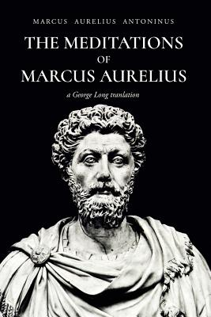

These are my
Favourite books
Amid the whispers of ages past,
In pages bound, a world amassed.
Books, the portals to realms unknown,
Where hearts and minds find their own throne.
 The Meditations of Marcus AureliusMeditations" is a collection of personal writings by the Roman Emperor Marcus Aurelius, composed during his time as ruler and military leader. The book is essentially a series of philosophical reflections and practical insights that offer guidance on how to live a virtuous and meaningful life.
Aurelius' meditations are written in the form of notes to himself, exploring various themes and ideas related to Stoicism, a philosophical school that emphasizes self-control, rationality, and acceptance of things beyond our control. Some key concepts discussed are Virtue, Inner peace, acceptance of fate, self-examination , emotional control,empathy, kindness and death. Another intresting fact is that this book was not ment to be published so this served as a personal journal of philosophical reflections.
The 33 Strategies of WAR by Robert Greene"The 33 Strategies of War" is a book written by Robert Greene, published in 2006. This book is part of Greene's series of books on power, strategy, and human behavior, which also includes titles like "The 48 Laws of Power" and "The Art of Seduction." which i will read and write on shortly.In "The 33 Strategies of War," Greene examines various historical battles, conflicts, and strategies employed by military leaders, philosophers, and thinkers throughout history. He distills these strategies into 33 principles that can be applied not only on the battlefield but also in various aspects of life, including business, relationships, and personal development. The book aims to provide readers with a comprehensive understanding of different tactics and approaches to navigate challenges and conflicts successfully.Each strategy is presented in a concise and engaging manner, often accompanied by historical anecdotes and examples. Greene draws on a wide range of sources, from Sun Tzu's "The Art of War" to the strategies of Napoleon Bonaparte, Alexander the Great, and many others. The book emphasizes the importance of adaptability, psychological insight, and the ability to manipulate situations to one's advantage.The 33 Strategies of War" is a thought-provoking book that provides readers with a diverse collection of strategies drawn from historical conflicts. It offers insights into the nature of power, strategy, and human behavior. It is a highly recommended book